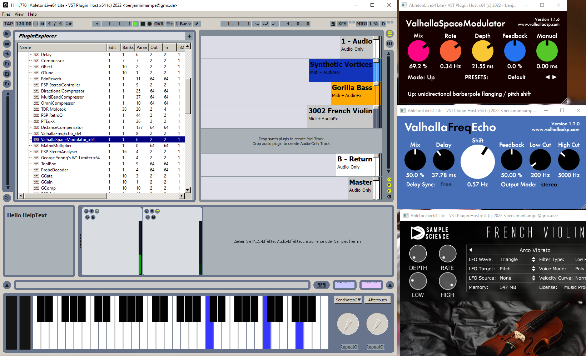

AbletonLive64 Lite qt + Custom VST Plugins (C++) |
| My latest big audio app playground, completly messed up and experimental! |
Reason of existence: |
| This workspace is for VST Audio Plugin development |
| I needed a VST plugin host for x64 plugins. And i only possess an old 32bit AbletonLive |
| Since im a programmer i thought i program it myself instead of investing money. |
| The minimal_vsthost is not enough anymore since it only loads a synth but not effect plugins. |
| The AudioSynth-qt project uses so many libs for easy experimenting, especially the big FFMPEG package. |
Features: |
- Produces sound using RtAudio, default is WASAPI
- Scans entire folders for VST-Plugins ( might result in endless loop for bad plugins, and there are many bad plugins )
- Builds fast because it only relies on very few and small libs (yet).
- Has a very dynamic computed layout and helped me a lot understand Qt
- Should save/load plugin database xml in RoamingDir, but seems broken.
- I kinda broke the midi keyboard, needs repair.
- Crashes when deleting the first audio track.
- VST Editor windows are empty on first open, d.k. why yet, this worked better before.
- The show plugins button stopped working.
- I probably will add my new MIDI parser in this app first. Each MIDI track gets a new TrackWidgets
- I like to have screenshots of VST editor windows. Probably work on that issue next when i have time.
- The rendering of the plugin shell widgets did broke, no texts visible, borders look strange
- No OpenGL yet
- I hate using Qt more and more, there are keys missing for german keyboards what i call fatal
- Qt is kinda slow (thatswhy i dont like Plasma desktops) and i cant link statically to qt dlls
|
Download: (full) Sources + Binaries |
 ./cpp_AbletonLive64_Lite_qt.7z22MB
./cpp_AbletonLive64_Lite_qt.7z22MB |
Screenshot: cpp_AbletonLive64-Lite_qt_001.png |
|  |
Used libraries: |
- QtSDK( GUI, C/C++ compiler, debugger, mingw32-make, QtCreator )
- RtAudio ( audio engine backend, includes Steinberg ASIO SDK )
- VST2SDK to load audio plugins
- DarkImage ( my image lib )
- DarkImage_ttf ( some addons for DarkImage, mostly freetype2 and fontawesome )
|